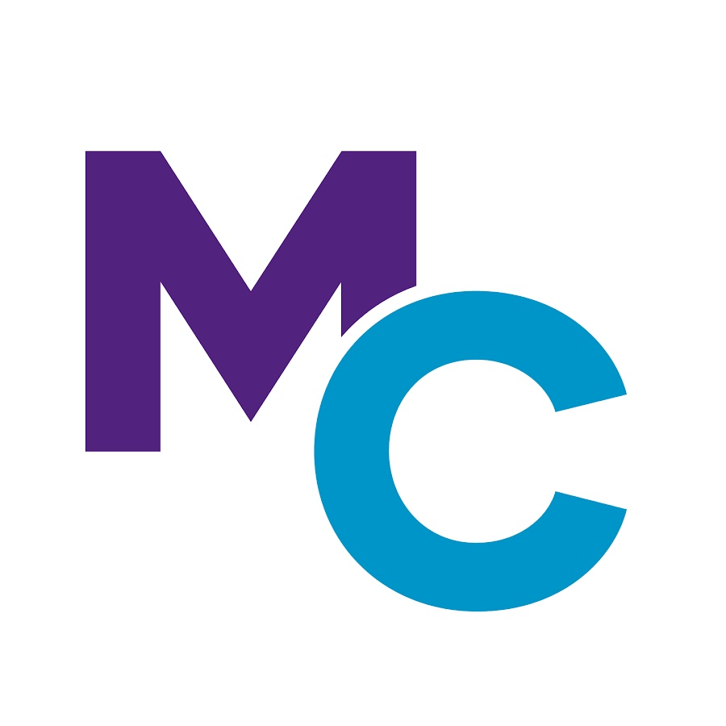
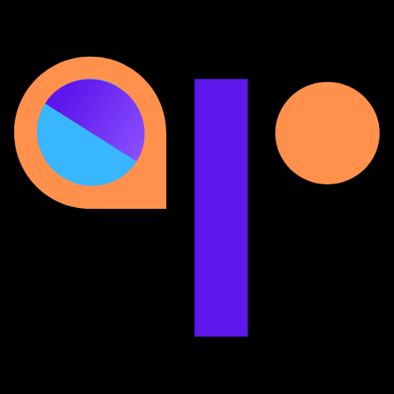
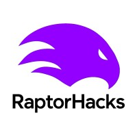

I am a junior at the
 University of Maryland studying Computer Science.
My background spans software development and machine learning, and I am currently focusing on signal processing and multimodal perception
with broader interests in understanding human behavior.
University of Maryland studying Computer Science.
My background spans software development and machine learning, and I am currently focusing on signal processing and multimodal perception
with broader interests in understanding human behavior.
If you'd like to chat, please reach out. Always open to work on interesting projects!
Contact
- Twitter: @telmenbay
- Email: bayarakh@gmail.com
- GitHub: @TelmenBay
- LinkedIn: telmenbayarbaatar
Projects
- Leetlog - Open source project and a platform for tracking LeetCode progress
- Forkcast - AI-powered demand forecasting for restaurant inventory
- Imposter Game Mongolian - A Mongolian language adaptation of the popular social deduction game
- ImageToCalendar - Convert images into calendar events
Research Experience
- Incoming Undergraduate Research Assistant at ICoSMoS lab - Fusion between acoustic signals and multimodal perception. (Advised by Nirupam Roy) (2025-01-26)
- Undergraduate Research Assistant at  Montgomery College - Analysis of Nearest Neighbor Nim on a three vertex graph (Advised by Zhou Dong) (2024-08-28)
Industry Experience
- Product Engineering Intern at
 Together For You, Inc - UI/UX design and mobile app development. (2025-10 ~ 2025-12)
Together For You, Inc - UI/UX design and mobile app development. (2025-10 ~ 2025-12) - Software Development Intern at  TSESSEBE Technologies - Authentication and Payment Processing. (2024-11 ~ 2025-02)
Extracurricular & Leadership
- AI/ML Ignite Fellow
 AI4ALL - Topological Data Analysis (TDA) enhanced N-BEATS model. (2025-08 ~ 2025-12)
AI4ALL - Topological Data Analysis (TDA) enhanced N-BEATS model. (2025-08 ~ 2025-12) - Co-founder of  RaptorHacks - Hosted MC's inaugural hackathon, raised over $3,000 & partnered with IgnITe Hub. (2025-04-26)
- Software Engineering Fellow at
 Headstarter AI - Built an AI-powered flashcard generator for language learning. (2024-08 ~ 2024-10)
Headstarter AI - Built an AI-powered flashcard generator for language learning. (2024-08 ~ 2024-10)